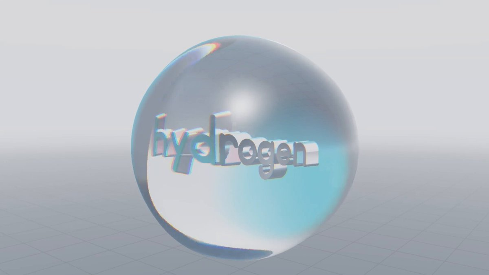
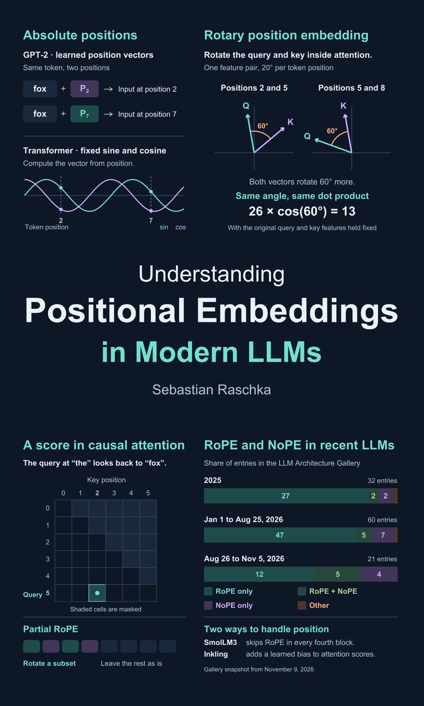
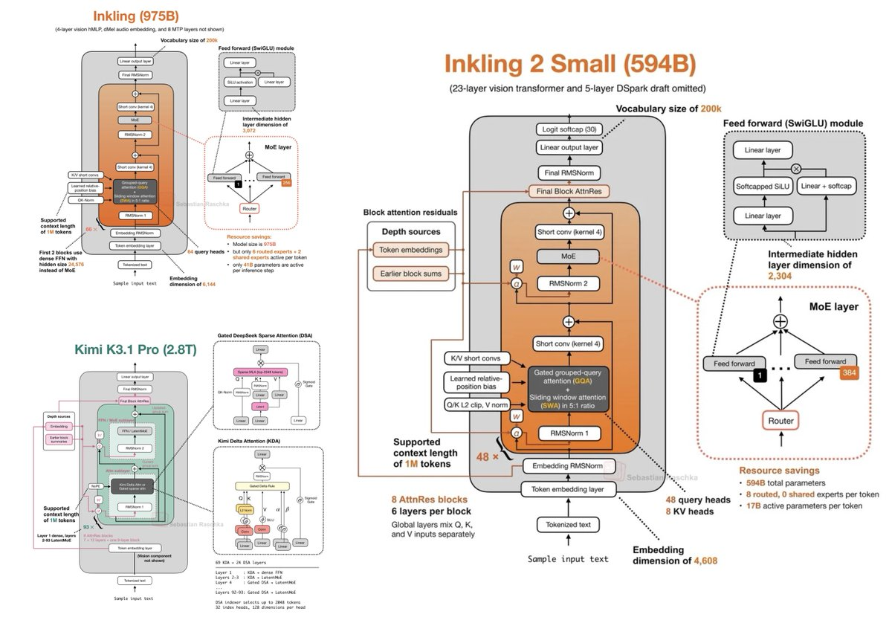
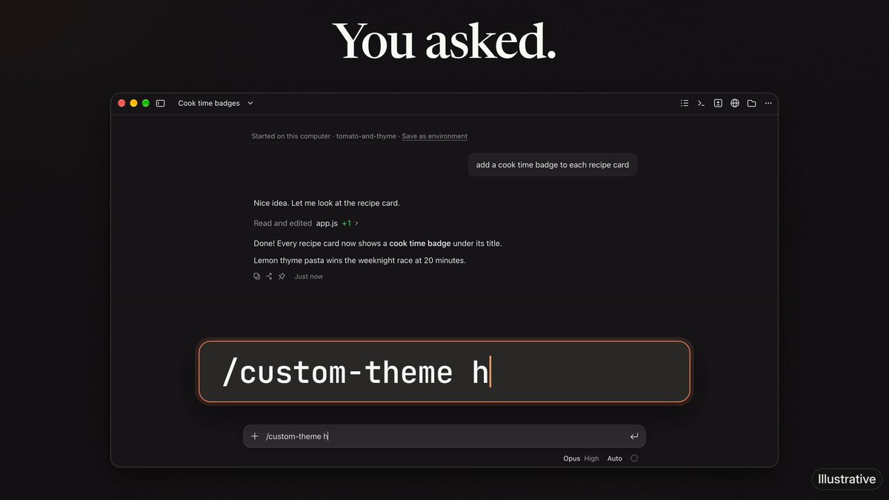
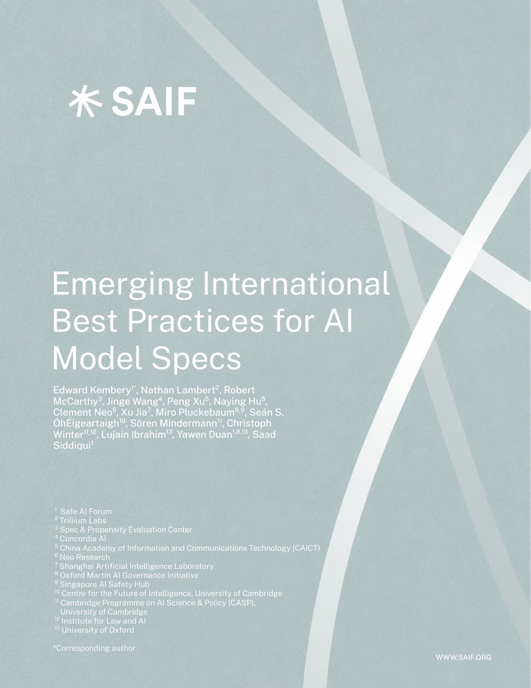
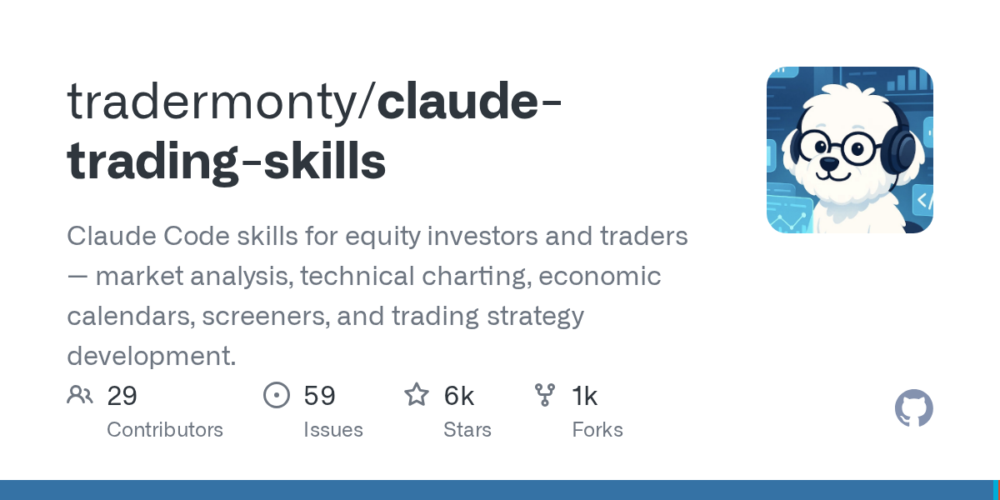
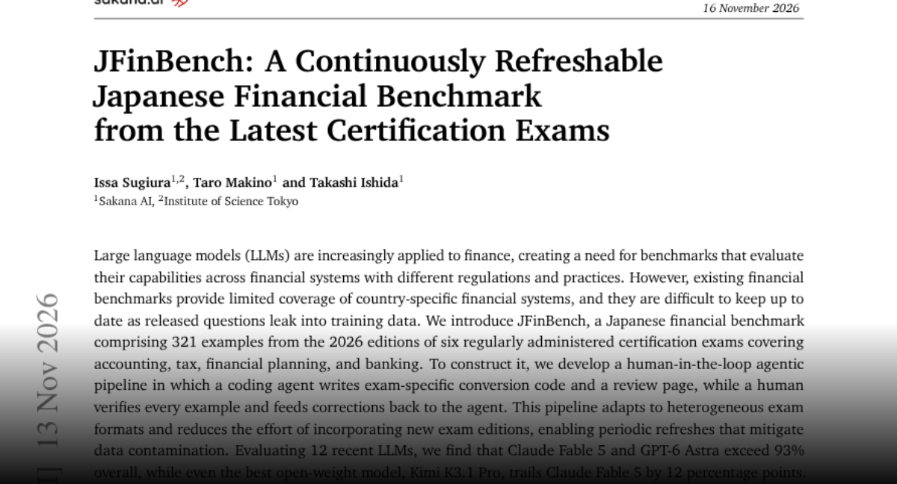
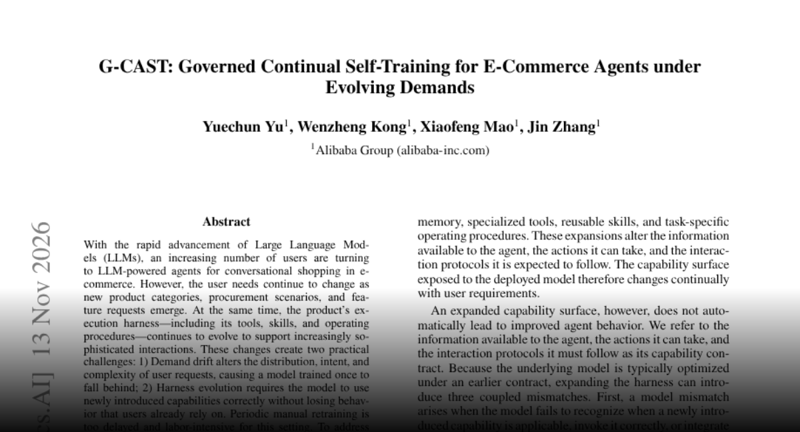
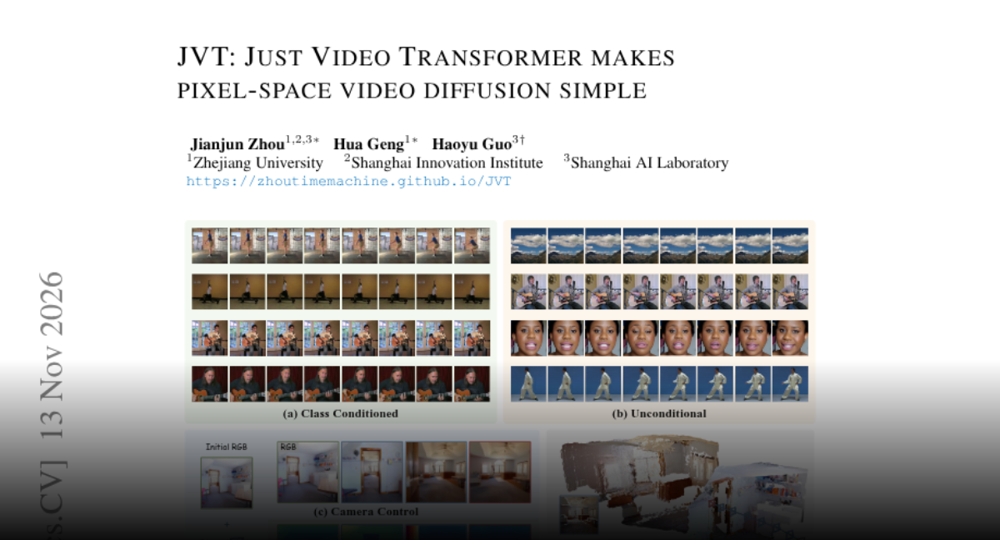
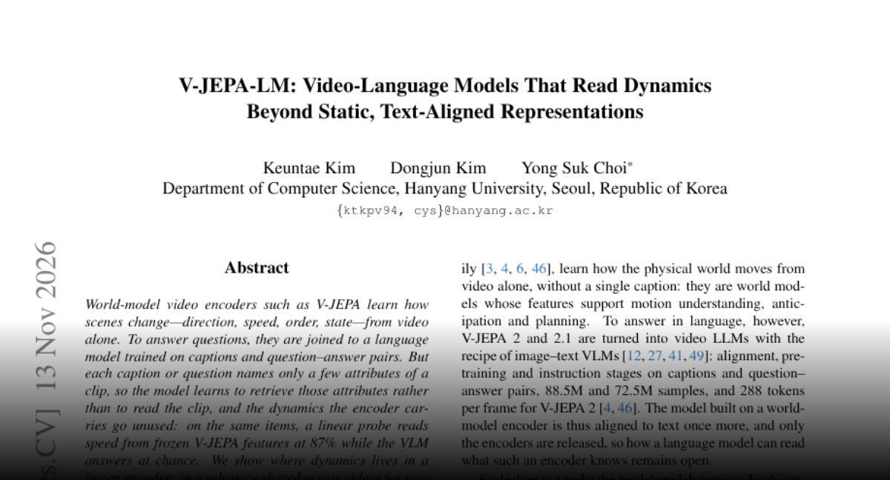

01
OpenAI 为 ChatGPT for Healthcare 增加计算机操作智能体
OpenAI 宣布为 ChatGPT for Healthcare 增加计算机操作智能体、改进临床回答，并推出新的医疗插件，目标是帮助团队跨医疗软件完成任务。这使产品从问答进一步走向工作流程执行。公告介绍的是产品能力，不能直接视为对临床结果或所有医疗场景可靠性的证明。
每天一次，过滤 AI 噪音
OpenAI 宣布为 ChatGPT for Healthcare 增加计算机操作智能体、改进临床回答，并推出新的医疗插件，目标是帮助团队跨医疗软件完成任务。这使产品从问答进一步走向工作流程执行。公告介绍的是产品能力，不能直接视为对临床结果或所有医疗场景可靠性的证明。
LVMH 媒体部门与 OpenAI 宣布合作，利用 AI 支持新闻业务，并通过 ChatGPT 提升旗下出版内容的可访问性。合作同时涉及新闻生产与 AI 助手分发渠道。采集公告未说明财务条款或具体实施安排，但体现出大型媒体机构正正式参与 AI 产品中的内容传播。
The King’s Trust 与 OpenAI 宣布价值 100 万英镑的合作，计划帮助英国最多 25,000 名年轻人培养工作所需的实用 AI 技能。项目把 AI 普及与就业能力联系起来。资金及人数是计划规模，公告尚未证明实际参与、完成培训或就业结果。
OpenAI 发布了关于标准模型候选非微扰格点定义的研究介绍，并称 GPT-6 Astra 帮助将想法发展为详细证明。该案例将 AI 辅助带入理论物理，但数学与科学审查仍是关键。公告明确使用“候选”表述，应视为待专家评估的研究主张，而非已经定论的问题解决方案。

WIRED 报道，黄仁勋离任后，Colette Kress 接掌英伟达，而 AMD、云厂商自研芯片及专用推理芯片正加强竞争。报道还指出，AI 辅助代码迁移可能降低 CUDA 的转换门槛。领导层变化之外，推理需求增长和替代硬件也在影响英伟达未来产品周期的技术与商业决策。

据 The Register 转述谷歌威胁情报团队报告，攻击者使用 AI 框架自主分析安全补丁、生成漏洞利用并实施攻击。研究人员发现的暴露服务器还存有受害机构被盗数据。这显示恶意使用正从聊天辅助走向自动化入侵流程，也意味着安全补丁公开后，未修复系统可能更快面临攻击。

Qwen 官方 Qwen4-Max 页面在采集时获得 Hacker News 746 分和 375 条评论，是当日最受关注的 AI 条目之一。采集内容确认了公告及讨论热度，但没有提供可核实的技术规格或独立基准结果。模型评估应以官方能力与使用说明为准，并区分社区关注度与实际工作负载表现。

谷歌通过视觉演示强调 Gemini 4 Hydrogen 已在 Gemini、搜索、AI Studio 等产品中提供。更新重点是广泛可用性和创意用途，而非新的基准成绩或技术规格。对用户和开发者而言，熟悉界面中的接入方式同样重要，实际价值仍取决于具体任务和产品入口。

Sebastian Raschka 提出，开源 LLM 生态需要组件级 API，以降低跨架构实验的成本。模型组件日益多样，在 PyTorch 或 C++、CUDA 实现间切换会产生工程负担。这是一项工具设计建议，而非已发布标准；统一接口可能让架构比较和可复现实验更容易维护。

Sebastian Raschka 发布现代语言模型位置编码教程，包括从零实现 RoPE，并讨论 NoPE、部分 RoPE 和混合方案。该内容在采集窗口中获得较高互动，有助于理解架构变化。它的主要价值是解释基础组件，而非宣布新模型或刷新性能纪录。

Sebastian Raschka 指出 Inkling 2 Small 采用了类似 Kimi K3 的注意力残差，但没有线性注意力混合结构。这为语言模型架构趋势讨论提供了具体线索。该内容是研究者的技术解读，而非独立基准结论；开发者可据此关注不同组件对实现、训练行为及模型比较的影响。

Anthropic 开发者账号宣布 Claude Code 桌面版可通过 mods 自定义主题，包括颜色和动画背景。用户可以向 Claude 描述外观，也可使用 theme-examples 插件。该条目是本次 X 候选中获赞最多的内容，属于显著的开发者产品更新，但不代表编码能力或底层模型性能变化。

Hugging Face 的 Thomas Wolf 称赞英伟达开放权重机器人模型 GR00T 2，并表示 LeRobot 集成正在进行。该消息把模型与开放机器人工具生态联系起来，但仍是简短进度说明，不代表集成已完成或能力经过独立验证。实际兼容性和表现需要结合具体硬件与任务评估。

Nathan Lambert 认为模型规范有助于组织内部对齐和轻量外部监督，并指出随着智能体从生成文本走向自主行动，其重要性正在上升。这是治理观点，而非新的合规框架。对于智能体产品，随着委托行动范围扩大，预期行为需要更加清晰、可理解和可审查。

Greg Brockman 表示，dot 通过与 American Express、Mastercard 和 Visa 合作支持安全购买。简短公告把支付执行纳入 AI 相关产品行动范围，但未说明可用地区、认证流程或责任安排。评估助手可获得多大购买权限时，这些实现细节十分重要。

Runway 宣布平台已提供 Seedance 2.5 Flash，并将其定位为更快、更低成本的视频生成选择。这是在创作流程中增加模型选项，而非发布新的 Runway 自研基础模型。公告未给出具体价格或延迟对比，制作团队仍需查看当前产品详情再作选择。

AG-UI 是本日 GitHub 候选中的 TypeScript 项目，提供 Agent-User Interaction Protocol，旨在将智能体接入前端应用。采集时仓库拥有 18,596 星，体现开发者关注度，但不等于生产适用性证明。设计用户如何理解和协同智能体工作时，该项目值得研究。

claude-trading-skills 为股票投资者和交易者整理 Claude Code 技能，覆盖市场分析、技术图表、经济日历、筛选器及策略开发。它展示了按专业流程组织智能体能力的方式，采集时有 6,106 星。仓库描述说明预期功能，不代表投资业绩，输出仍需独立评估。

Univer 是可扩展的开源办公 SDK，为用户和 AI 智能体提供编辑、计算、协作和文件处理能力。该 TypeScript 仓库在采集时有 27,573 星。其价值在应用层：智能体需要操作文档及办公流程的结构化能力，具体功能覆盖和部署要求仍应查阅项目文档。

WebArena-Pro 提供覆盖六类领域、20 个自托管 Web 应用的 300 项任务，将音频和视频与文本、图像一并纳入观察。作者希望兼顾多样工作流程与可复现性，避免在线网站变化影响评估。最佳报告成绩为 62.3%，说明复杂、跨界面且有状态的浏览器工作仍有明显挑战。

MMFlash 研究视觉依赖为何增加推测解码难度。作者报告，草稿 token 接受率从视觉依赖最低四分位的 46% 降至最高四分位的 22%。方法提高难预测视觉相关 token 的训练权重，并针对长视频采用稀疏注意力，实验报告最高 3.58 倍无损解码加速。

JFinBench 包含来自 2026 年六项日本金融资格考试的 321 个样例，覆盖会计、税务、财务规划和银行业务。人类审核的智能体转换流程便于持续纳入新版试题，降低数据污染。12 个模型的评测显示，工具使用普遍改善表现，但差距仍存在，说明本地金融知识与持续更新的评估同样重要。

G-CAST 将电商智能体生产证据转为持续训练数据，以应对需求变化和工具演进。系统结合奖励路由、基于熵的数据优先级及受控奖励更新，并在版本切换前进行累计评估。作者报告其适应性和既有能力保持优于基线，并称已部署到阿里巴巴 1688 的源采采购智能体。

JVT 使用大 patch 的 DiT 风格 Transformer 直接进行像素空间视频扩散，不依赖预训练自动编码器、辅助细化器或级联阶段。作者研究嵌入、寄存 token 与归一化设计，并报告在所测条件下达到与潜空间扩散基线相近的质量。联合 RGB 与视差生成还改善了相机跟随能力。

V-JEPA-LM 研究语言模型为何无法利用冻结视频编码器中已存在的运动信息。作者通过变换公开视频构建反事实监督，让答案取决于方向、速度等变化，并报告 10 亿至 80 亿参数模型在 11 项视频基准上的强劲结果。重点是区分编码器保存了什么，以及语言监督教会模型读取什么。

Aligning AI Teams 研究单个智能体的对齐行为为何不一定迁移到团队。软件工程和方案生成任务中，相互批评及群聊不能稳定消除差距。作者将责任分散视为主要机制，并报告指定安全负责人和共享安全规范能够改善表现。这表明增加智能体也是组织设计问题。

Continual-ARC 使用三个 ARC-AGI 版本中的重复任务流，通过新样例、反馈预算及后续测试评估终身学习，并在统一尺度上比较记忆型框架与权重学习。所报告实验中，缺乏专家指导时持久化通常无法改善记忆，框架方法也未提升未见任务表现，提示保存历史不等于学会可迁移技能。